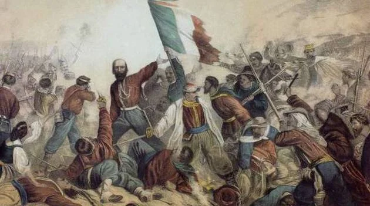
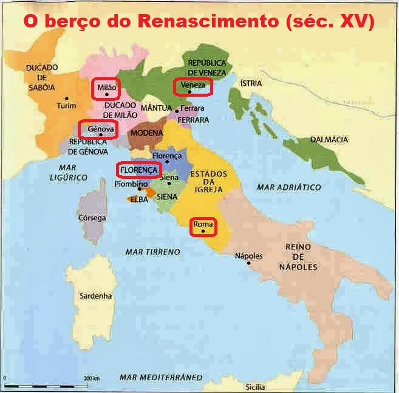
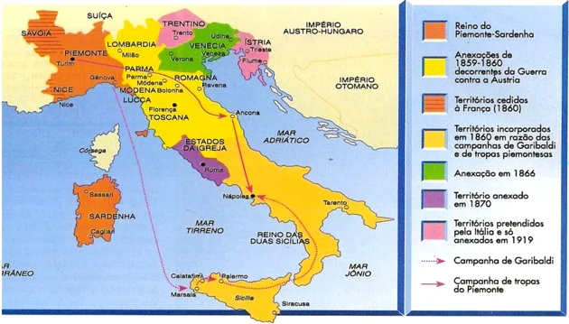

Como se formou? |
| A formação da Itália como uma nação unificada é um processo histórico complexo que se desenrolou ao longo de séculos e envolveu várias guerras, revoluções e movimentos políticos. |
|  |
Roma Antiga |
| A história da Itália antiga é dominada pela presença do Império Romano, que unificou a península sob um governo central. Roma cresceu de uma pequena cidade-estado para um dos maiores impérios da história, existindo de 753 a.C. até 476 d.C. |
Idade Média |
| Com a queda do Império Romano do Ocidente em 476 d.C., a Itália se fragmentou em vários reinos, ducados e estados independentes. Entre os séculos VI e IX, a Península Itálica foi invadida e controlada por várias potências estrangeiras, incluindo os Ostrogodos, Lombardos e Francos. No século XI, o Papado e o Sacro Império Romano-Germânico disputaram o controle sobre a Itália central e norte, levando à fragmentação contínua. |
Renascimento |
| Durante o Renascimento, entre os séculos XIV e XVII, a Itália era composta de várias cidades-estado independentes como Veneza, Florença, Milão e os Estados Papais, que eram centros de arte, cultura e comércio. |
|  |
Movimento de Unificação |
Século XIXNo início do século XIX, a Península Itálica estava dividida em vários estados e reinos, incluindo o Reino da Sardenha, o Reino das Duas Sicílias, o Grão-Ducado da Toscana, e os Estados Papais, além de territórios controlados pelo Império Austríaco. De 1805 a 1814, durante o período napoleônico, Napoleão Bonaparte unificou temporariamente partes da Itália sob o Reino da Itália, um estado cliente francês. |
Revoluções de 1848A onda de revoluções liberais que varreu a Europa em 1848 também afetou a Itália. Embora a maioria das revoluções tenha sido suprimida, elas semearam as sementes do nacionalismo italiano. |
Unificação (1861)Entre 1859 e 1861, sob a liderança do Reino da Sardenha e de figuras proeminentes como o Conde de Cavour, Giuseppe Garibaldi e o Rei Vítor Emanuel II, a maior parte da Itália foi unificada. Em 1861, foi proclamado o Reino da Itália com Vítor Emanuel II como rei. |
Consolidação da UnificaçãoEm 1866, após a Terceira Guerra de Independência Italiana, o Vêneto foi anexado ao Reino da Itália. Em 1870, durante a Guerra Franco-Prussiana, as tropas francesas que protegiam o Papa retiraram-se de Roma. As forças italianas entraram em Roma, completando a unificação da Itália. Roma foi declarada capital do Reino da Itália em 1871. |
|  |
Era Moderna |
Primeira Guerra Mundial (1914-1918)Entre 1915 e 1918, a Itália entrou na Primeira Guerra Mundial ao lado das Potências Aliadas, esperando obter territórios italianos irredentos como Trentino, Tirol do Sul, Ístria e Dalmácia. Após a guerra, a Itália anexou esses territórios, mas o custo humano e econômico foi enorme. |
Fascismo e Segunda Guerra Mundial (1922-1945)Em 1922, Benito Mussolini e o Partido Nacional Fascista chegaram ao poder, estabelecendo uma ditadura. Durante a Segunda Guerra Mundial, a Itália aliou-se à Alemanha nazista, mas após uma série de derrotas, Mussolini foi deposto em 1943. Em 1945, a Itália se rendeu e Mussolini foi capturado e executado. |

|
Conclusão |
| A formação da Itália como uma nação unificada foi um processo longo e complexo, marcado por conflitos internos e externos, revoluções e a luta pela independência. Desde a unificação no século XIX, a Itália passou por transformações significativas e continua a desempenhar um papel importante na Europa e no mundo. |
|
|